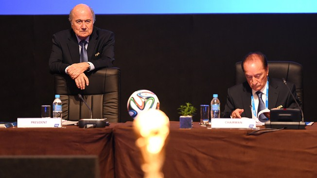

Casi 3 millones de entradas vendidas para el Mundial 2014
La gran expectacion mundial por el gran acontecimiento se constata claramente en los 11 millones de entradas solicitadas, y con solo 3.1 millones de localidades disponibles. En total, se han vendido hasta la fecha 2 961 911 millones de entradas, de los cuales 2.2 millones fueron vendidos directamente al publico a traves de FIFA.com. Todo aficionado sueña con ver un partido de la Copa del Mundo en el pais del pentacampeon mundial. Nunca antes habiamos vendido directamente tantas localidades al publico, algo que consideramos muy importante; el numero de solicitudes para el partido de apertura y la final se multiplico por diez. Las largas filas de personas tratando de adquirir entradas del Mundial que vimos ayer en los centros de venta de entradas demuestran el enorme interes de los brasileños y de la aficion internacional en la Copa Mundial de la FIFA 2014, comento el Secretario General de la FIFA Jerome Valcke.
